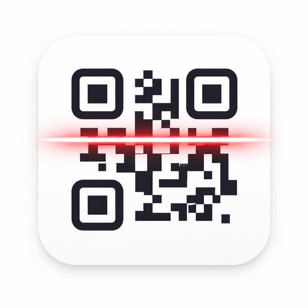

These Terms of Use (“Terms”) govern your access to and use of QR Pro Scan (“the App”, “we”, “our”, or “us”). By using the App, you agree to be bound by these Terms.
Last updated: January 2026
By downloading, installing, or using QR Pro Scan, you confirm that you have read, understood, and agree to these Terms. If you do not agree, please do not use the App.
QR Pro Scan is a utility application that allows users to scan, create, manage, and share QR codes. All processing is performed locally on your device.
You agree to use the App only for lawful purposes and in compliance with applicable laws and regulations.
QR codes may contain links to third-party websites or services. We do not control or endorse any external content and are not responsible for its accuracy, security, or practices.
The App, including its design, code, branding, and logos, is the intellectual property of devhook. You may not copy, modify, or redistribute any part of the App without prior written permission.
QR Pro Scan is provided on an “as is” and “as available” basis. We make no warranties regarding reliability, availability, or accuracy of scanned content.
To the maximum extent permitted by law, devhook shall not be liable for any direct, indirect, incidental, or consequential damages arising from the use or inability to use the App.
We reserve the right to suspend or terminate access to the App at any time without notice if these Terms are violated.
We may update these Terms from time to time. Continued use of the App after changes constitutes acceptance of the revised Terms.
These Terms shall be governed by and interpreted in accordance with applicable local laws, without regard to conflict of law principles.
If you have questions regarding these Terms, please contact us:
📧 Email: devhookdeveloper@gmail.com